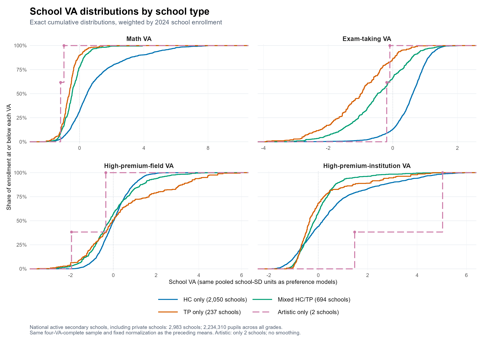

Enrollment-weighted VA distributions by school type
The four groups are HC-only, mixed HC/TP, TP-only and artistic-only schools. Use the same national population, four jointly observed EB VAs, normalization and 2024 whole-school enrollment weights as the preceding mean table. Private-paid schools are included. Enrollment covers all grades.
At a given VA on the horizontal axis, each curve gives the share of that type's enrollment in schools with VA at or below that value. A distribution farther to the right has higher VA. The artistic group has only two schools: its jumps and marked points show their actual enrollment masses. No kernel, bandwidth, tail trimming or interpolation is used.
